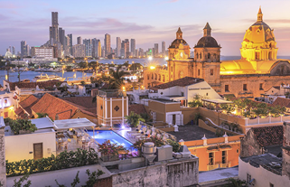

10 cosas que ver y que hacer en Cartagena de Indias
90
12 de septiembre, 2021

La perla colonial de Colombia, la niña bonita del Caribe. Bienvenido a un mundo de mil colores, olores y sabores. Allí donde la arquitectura colonial convive con auténticas obras de arte callejeras y la música se cuela por cada rincón de la ciudad. ¡Sí! Es Cartagena de Indias, el rincón más turístico de Colombia por méritos propios. Y hoy os la voy a mostrar sin caretas, al desnudo. Vamos a conocer las 10 mejores cosas que ver y que hacer en Cartagena de Indias si dispones de 2 o 3 días.
Seguir leyendo >